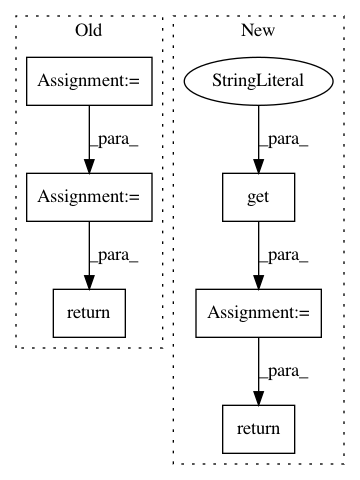

34cd4f7599e47bfaaac20b9ebde1e35fc1cd44ee,catalyst/utils/pandas.py,,read_multiple_dataframes,#Any#Any#Any#Any#Any#Any#,173
Before Change
whole dataframe, train part, valid part and infer part
df_train = merge_multiple_fold_csv(fold_name="train", paths=in_csv_train)
df_valid = merge_multiple_fold_csv(fold_name="valid", paths=in_csv_valid)
df_infer = merge_multiple_fold_csv(fold_name="infer", paths=in_csv_infer)
if args_are_not_none(tag2class, tag_column, class_column):
df_train = map_dataframe(df_train, tag_column, class_column, tag2class)
df_valid = map_dataframe(df_valid, tag_column, class_column, tag2class)
df_infer = map_dataframe(df_infer, tag_column, class_column, tag2class)
result_dataframe = df_train. \
append(df_valid, ignore_index=True). \
append(df_infer, ignore_index=True)
return result_dataframe, df_train, df_valid, df_infer
def read_csv_data(
in_csv: str = None,
After Change
if result_df is None \
else result_df.append(fold_df, ignore_index=True)
output = (
result_df,
fold_dfs.get("train", None),
fold_dfs.get("valid", None),
fold_dfs.get("infer", None),
)
return output
def read_csv_data(
in_csv: str = None,
In pattern: SUPERPATTERN
Frequency: 3
Non-data size: 6
Instances
Project Name: catalyst-team/catalyst
Commit Name: 34cd4f7599e47bfaaac20b9ebde1e35fc1cd44ee
Time: 2019-12-31
Author: scitator@gmail.com
File Name: catalyst/utils/pandas.py
Class Name:
Method Name: read_multiple_dataframes
Project Name: ray-project/ray
Commit Name: d192ef06119f3eccf569a844b30976db99cfa0f6
Time: 2020-03-10
Author: rliaw@berkeley.edu
File Name: python/ray/util/sgd/torch/examples/train_example.py
Class Name:
Method Name: data_creator
Project Name: dmlc/gluon-nlp
Commit Name: 1e50a6606c5215e0dc28d016bb5f57bd668f47af
Time: 2019-06-06
Author: lausen@amazon.com
File Name: src/gluonnlp/vocab/bert.py
Class Name: BERTVocab
Method Name: from_json